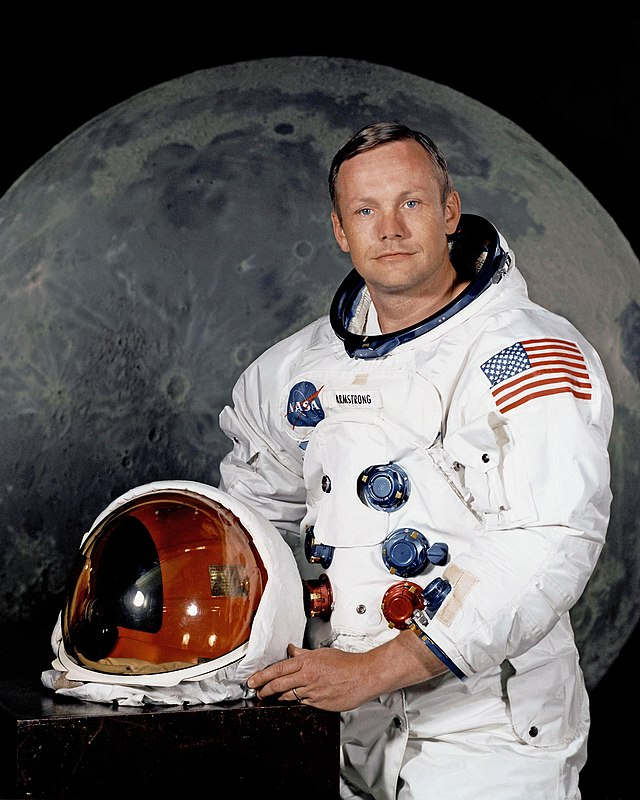

Continue Journalling
Log 1: Today, I watched Earth from the station and felt a deep sense of connection...
Log 2: The silence of space brought clarity to my thoughts today...
Continue Journalling

Today's Affirmation
“That's one small step for man, one giant leap for mankind.” - Neil Armstrong
